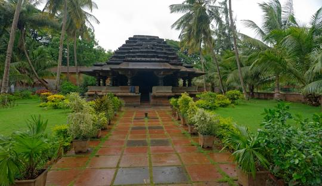
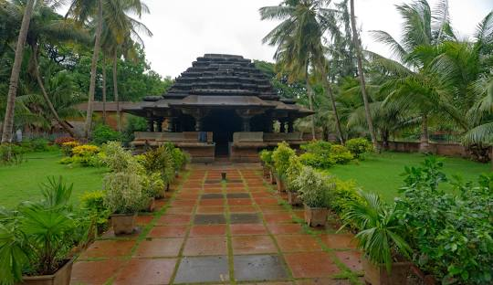
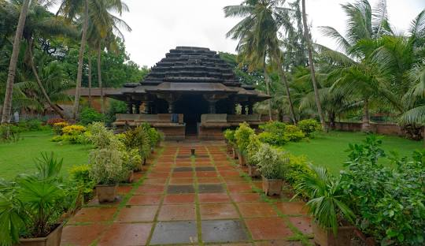

Kamal Basadi
Kamal Basadi is a Jain temple located inside Belgaum Fort in city of Belgaum,
Karnataka Location: VG5C+6H4, Belgaum Fort Area, Belagavi, Karnataka 590001
 


Kamal Basadi is a Jain temple located inside Belgaum Fort in city of Belgaum,
Karnataka Location: VG5C+6H4, Belgaum Fort Area, Belagavi, Karnataka 590001

Kamal Basadi, nestled in the heart of Belgaum, Karnataka, is a stunning Jain temple built in 1204 CE by Birchiraja, an officer under the Ratta dynasty. This temple, dedicated to Lord Neminatha, stands as a beautiful testament to Western Chalukyan architecture and Jain heritage. The Name and Architecture The temple gets its name from the mesmerizing lotus-shaped carvings on its central dome. This lotus, with its 72 intricately designed petals, symbolizes the 24 Tirthankaras of the past, present, and future. Every wall, pillar, and doorway of the temple is adorned with delicate carvings and sculptures, reflecting the craftsmanship of that era. Inside, the temple houses idols of Neminatha, Rishabhanatha, Sumatinatha, and Parshvanatha, each sculpted with remarkable detail. The main sanctum (garbhagriha) features square, finely polished pillars, while the entrance showcases a beautifully carved doorway. One of the highlights of Kamal Basadi is the monolithic idol of Navagraha, depicting nine Tirthankaras. The mukhamandapa (entrance hall) is an architectural masterpiece, featuring eight carved makara brackets and depictions of celestial beings. The ceiling, with its pendant centerpiece and carvings of directional deities (ashṭa-dikpāla), adds to the grandeur. Religious and Cultural Significance As a revered Digambar Jain temple, Kamal Basadi is an important spiritual hub, especially during festivals like Mahavir Jayanti. The temple is maintained by the Shree Shree 1008 Neminath Tirthankar Digambar Jain Mandir Pooja Committee, ensuring its legacy continues for generations. Surroundings and Nearby Attractions Located within the Belgaum Fort complex, Kamal Basadi sits alongside another historic shrine, Chikki Basadi. The serene atmosphere, detailed stonework, and peaceful surroundings make it a must-visit spot for history enthusiasts, architecture lovers, and spiritual seekers alike. With its rich heritage, breathtaking carvings, and deep-rooted Jain significance, Kamal Basadi remains a timeless jewel of Karnataka. Whether you're a devotee, a history buff, or an admirer of ancient architecture, this temple offers a journey into the past like no other.
The Kamal Basadi, a stunning example of Jain architecture, was built around 1204 CE by Birchiraja, also known as Jaya Raya, an officer serving in the court of Kartavirya IV of the Ratta dynasty. This magnificent temple was constructed under the spiritual guidance of the revered Jain monk Subhachandrabhattarakadeva, reflecting the deep devotion and patronage of Jainism during that era. The name "Kamal Basadi" translates to "Lotus Temple," inspired by the intricate lotus-shaped carvings that adorn the ceilings and walls of the temple. The structure is a testament to the artistic excellence of that period, showcasing beautifully carved pillars, finely detailed sculptures, and an overall sense of divine symmetry. Historical inscriptions found on two stone tablets, now preserved in the Royal Asiatic Society branch in Mumbai, suggest that the construction was carried out by the skilled architect Kartaviryadeva, along with Yuvrajakumara Mallikarjunadeva. These records indicate that by 1205 CE, the temple stood completed, symbolizing a blend of religious dedication and architectural brilliance. Even today, Kamal Basadi remains an important site for devotees and history enthusiasts alike. Nestled within the historical landscape of Belgaum, it continues to attract visitors with its peaceful ambiance and intricate craftsmanship. The temple serves as a reminder of the rich cultural and spiritual heritage of the region, standing as a timeless monument to Jain philosophy and medieval Indian architecture.
Kamal Basadi, a breathtaking Jain temple, is named after the exquisite lotus carvings that extend from the dome of its central roof. The lotus, with its 72 intricately designed petals, is believed to symbolize the 24 Tirthankaras of the past, present, and future. This temple is a masterpiece of artistry and devotion, showcasing detailed engravings, ornamental borders, and finely sculpted figures on its walls. The architecture of Kamal Basadi is both elegant and awe-inspiring. The entire structure is supported by beautifully carved pillars, each featuring a cobra design at the ends of its brackets. These pillars are polished to perfection, reflecting the craftsmanship of ancient artisans. The shrine itself has a grand, intricately decorated entrance that invites visitors into a space filled with serenity and divine presence. Inside the temple, five small sanctums house idols of revered Tirthankaras. Between these sanctums, four Yakshas and Yakshis stand gracefully under intricately designed canopies. The inner sanctum, or garbhagriha, is defined by large, square pillars, each featuring niches with delicately carved Jain deities. One of the most striking features of Kamal Basadi is its mukhamandapa (main hall), considered an architectural marvel. The ceiling is adorned with a stunning pendant in the center, with carvings of the ashta-dikpalas (the eight directional deities) at each pillar’s corner. The dome’s lower section showcases beautifully sculpted Tirthankaras in meditative postures, emphasizing the temple’s deep spiritual significance. The temple's principal deity (mulnayak) is a striking black idol of Lord Neminatha. Additionally, the temple houses idols of Lord Rishabhanatha seated in padmasana, Lord Sumatinatha in kayotsarga, and Lord Parshvanatha with a seven-hooded serpent above his head. A remarkable monolithic sculpture of the Navagraha, represented by nine Tirthankaras, is also a notable feature of the temple. The original outer doorway, now serving as the entrance to the inner hall, is adorned with intricate carvings, including an image of a seated Jina. This richly detailed entrance enhances the temple's grandeur and reflects the extraordinary craftsmanship of the era. Surrounding the Kamal Basadi, visitors will also find the Chikki Basadi, another Jain temple, along with a traditional priest’s residence nearby. Together, these historical and religious sites create an atmosphere of deep reverence and timeless beauty, making Kamal Basadi a must-visit destination for history enthusiasts, spiritual seekers, and admirers of ancient Indian architecture.